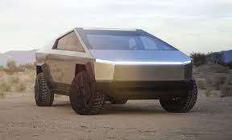
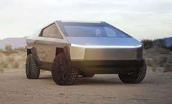
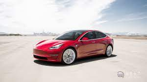
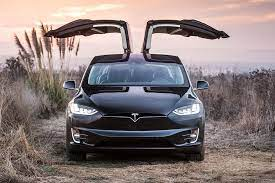
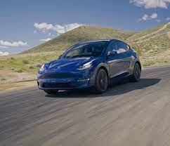
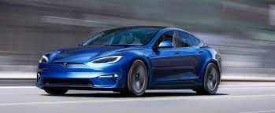
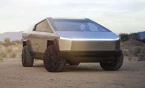
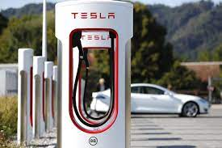

, 싸이버트럭[Cybertruck]은 아직 미출시 이다.
, 싸이버트럭[Cybertruck]은 아직 미출시 이다.
테슬라 주식회사(영어: Tesla, Inc.)<는 미국 캘리포니아주 팰로앨토에 기반을 둔 미국의 전기자동차와 청정 에너지 회사이다.
2003년, 마틴 에버하드(CEO)와 마크 타페닝(CFO)이 창업했다. 2004년 페이팔의 최고경영자이던 일론 머스크가 투자자로 참여했다.
회사 이름은 물리학자이자 전기공학자인 니콜라 테슬라의 이름을 따서 지었다. 2010년 6월 나스닥에 상장되었다.
테슬라 수퍼차저는 2012년 부터 테슬라 모터스가 전세계에 설치한 무료 급속 충전소를 말한다. 즉, 테슬라 차량을 구입한 사람들은 수퍼차저만 이용할 경우 연료비가 0원이다.
테슬라는 테슬라모델 3 , 모델 x , 모델y , 모델s 등을 생산 판매를 하고,
테슬라 로드스터[Roadster](2020), 싸이버트럭[Cybertruck]은 아직 미출시 이다.
2016년 4월 6일 현재 전세계에 613개의수퍼차저에[supercharger] 3,600개의 수퍼차저 충전기가 설치되어 있다. 북아메리카 259개소, 유럽 222개소, 아시아/태평양에 119개소가 있다.
오는 2017년까지 2배인 7200개로 늘릴 계획이다.한국에는 2017년 5월 25일 처음 공개 시행하였다. 12월 31일 기준 14개 수퍼차저가 건설되었고, 2018년에는 25개, 2020년에는 33개였으며, 2021년에는 V3급 수퍼차저가 오픈하며 기존 수퍼차저 포함 총 60곳을 건설할 예정이다.
수퍼차저는 480V의 직류(DC) 급속충전소다. 2015년 현재 홍콩이 수퍼차저 밀도가 가장 높다. 8곳의 수퍼차저 충전소에 36대의 수퍼차저 충전기가 설치되었다. 대부분의 홍콩 테슬라 모델 S 운전자는 20분 이내의 거리에 수퍼차저를 이용할 수 있다.
수퍼차저는 120kWh 직류(DC) 방식이어서 충전시간이 훨씬 단축된다. 배터리 용량 90kWh의 테슬라 모델 S를 수퍼차저에서 충전할 경우 40분이면 80%가 충전되고, 완충에는 75분이 걸린다. 따라서 수퍼차저를 이용해 테슬라 모델 3를 충전하면 21분이면 80% 충전되고 40분이면 완충된다.
최근 테슬라는 전기차 인프라를 확대하기 위해 수퍼차저 특허를 개방했다. 누구나 수퍼차저 충전 시스템을 쉽게 만들 수 있도록 하기 위해서다.